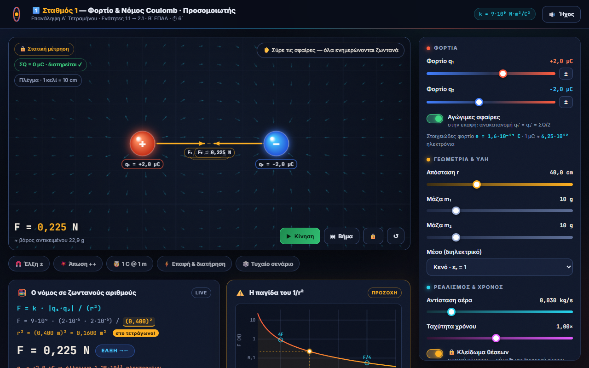
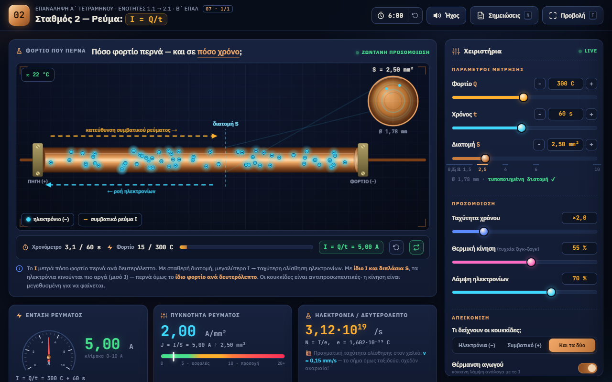
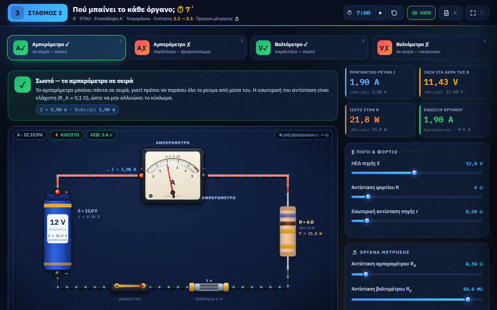
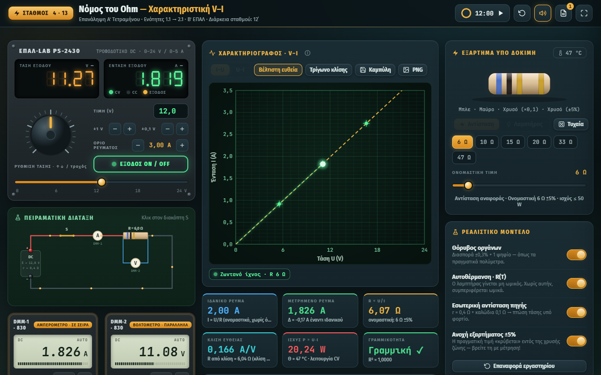
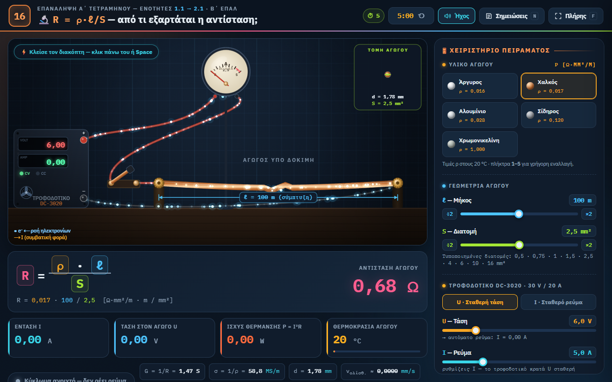

← Πίσω στη παρουσίαση (powerpoint.html)
Ηλεκτροτεχνία Β΄ ΕΠΑΛ · Ενότητες 1.1 → 2.1 — μεμονωμένα slides, το καθένα αυτόνομο αρχείο με τη διαδραστική προσομοίωση ενεργή και χωρίς πλοήγηση σε άλλα slides.

θεωρία: 4 βασικά σημεία, παγίδα 1/r², F = k·q₁·q₂/r²

Q, t, S → I, J, ηλεκτρόνια/s

αμπερόμετρο σε σειρά / βολτόμετρο παράλληλα

R, U → I και κλίση ευθείας

υλικό, ℓ, S → R, G, σ